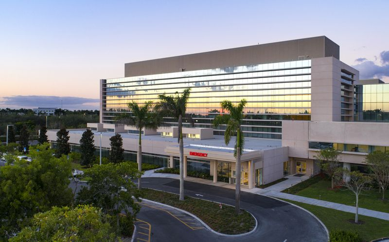

INICIAR SECIÓN
CONTÁCTANOS
BUSCAR MÉDICO
OFERTAS LABORALES

Mientras brindamos atención médica de alta calidad, desarrollaremos excelentes recursos humanos y contribuiremos al desarrollo de la atención médica.
Brindamos atención médica segura y de alta calidad.
Conscientes de la misión y responsabilidad médica, desarrollaremos un excelente personal médico con una rica humanidad.
Promoveremos la atención médica en equipo en la que todas las ocupaciones participen y trabajen con la comunidad local.
Nos esforzaremos por difundir conocimientos relacionados con la salud y la atención médica.
Contribuiremos a la comunidad internacional a través de la investigación de enfermedades y el desarrollo de tecnología médica avanzada.
Nuestro objetivo es establecer y mantener un sistema que permita la atención médica en equipo eficiente e integrada de médicos, enfermeras y técnicos altamente especializados, y capacitar a excelentes médicos.
Además, como un hospital de funciones especiales, brindamos atención médica avanzada, desarrollamos, evaluamos y capacitamos en atención médica avanzada, y trabajamos en estrecha colaboración con otras instituciones médicas al presentar a los pacientes.
Para consultas de pacientes, comuníquese con nuestra oficina de Servicios Globales por teléfono ( + 1-809-555-7788) o por correo electrónico servicios@CentromedicoCliente.com.
Su seguridad es importante para nosotros. Obtenga más información sobre nuestros procedimientos de seguridad adicionales.
Tenemos ubicaciones en todo el territorio nacional.
Encuentre una cerca de usted.